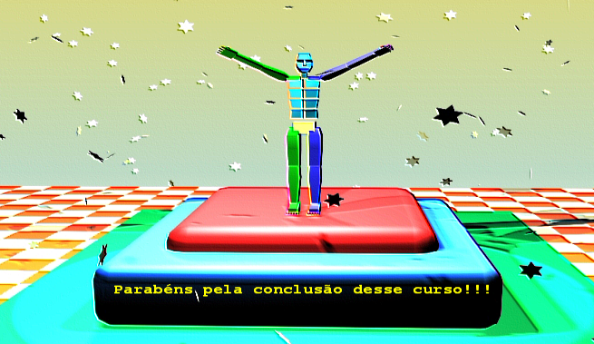

Curso completo de linguagem C++
Gameprog - Escola de programação de jogos digitais
Contato: gameprog.br@gmail.com
track30.html
30. Palavras finais
Palavras finais

Parabéns pela conclusão do curso completo de c++. Parabéns mesmo! por esta
magnífica conquista. A chegada com sucesso até esse capítulo final demanda
muita paciência, muita persistência, disciplina, dedicação e muito trabalho
de quem se aventura a aprender c++. Você deu um passo grande e agora está
apto a dar passos maiores ainda.
Nosso curso é completo no sentido de que nos ocupamos com todos os aspectos
principais dessa poderosa linguagem.
Entretanto nossos capítulos não exaure totalmente os temas apresentados porque
c++ é uma linguagem extensa e cheias de recursos com os seus mais de 50
arquivos de cabeçalhos de sua biblioteca padrão. Somente a parte de STL
demandaria um livro imenso para cobrí-la totalmente.
Não obstante você agora está apto para pegar desafios maiores e mais profundos
utilizando a linguagem c++ porque os aspectos fundamentais da linguagem foram
assimilados. Você agora tem um arsenal maior de ferramentas de construção de
software para desenvolver aplicações 3D mais poderosas e divertidas usando o
seu conhecimento de C++ em conjunto com a biblioteca gráfica DarkGdk.
Como seu próximo desafio sugerimos a assimilação da biblioteca Win32 para
produzir programas de alta performance para o sistema Windows utilizando
C++. E depois, e somente depois, recomendamos na sequência a assimilação
do DirectX
Nossa equipe Gameprog está elaborando os cursos de Win32 e DirectX. Verifique
regularmente o site para verificar a data de lançamento desses cursos.
Agradecemos sua escolha por nossos cursos e lhe desejamos muito sucesso!
Atenciosamente,
Equipe Gameprog